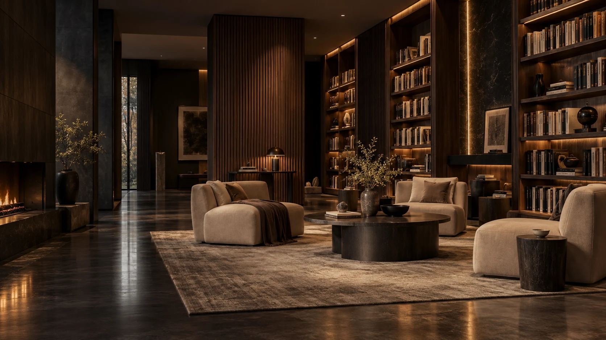
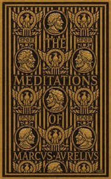
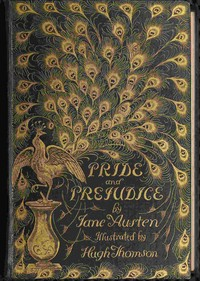
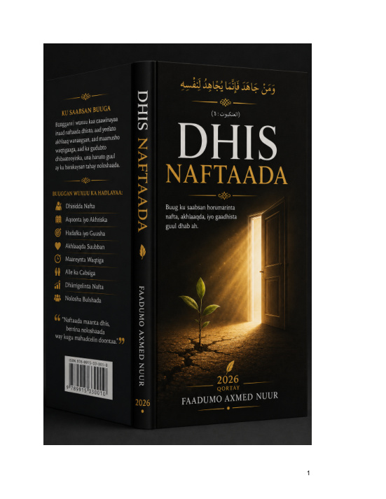
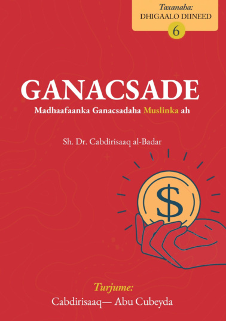

Read.
Learn.
Discover.
Your digital library for knowledge, stories,
and endless discovery.
The Reading Hour
A quiet moment. A world of possibility.

Meditations
Pride and Prejudice
Dhis Naftaada
Ganacsade — Madhaafaanka Ganacsadaha Muslinka ahXuska MawliidkaWelcome to Akram Library – The Home of Knowledge, Discovery, and Learning!
The library is a welcoming sanctuary dedicated to spreading knowledge, fostering creativity, and building community—our doors are open to everyone who seeks to learn and grow. Whether you are searching for the next book to add to your reading list, looking for a quiet space to study, or wanting to connect with like-minded people who love knowledge, this is your official space.
In just a few moments, step inside to explore an endless world of incredible stories, modern digital resources, and life-changing learning opportunities. This platform is always here to guide you on the right path, inspire your curiosity, and help you find exactly what you need for your journey of knowledge.
Discover your next book →Discover. Read. Grow.
Loading the collection / Buugaagta waa la soo rarayaa…